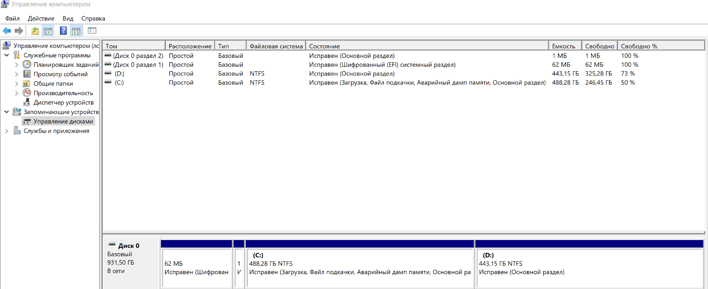

Windows 10- операционная система семейства NT. Данная операционная система является последним продуктом от фирмы Microsoft.
Теперь в Windows 10 можно не устанавливать антивирусную программу, так как в систему встроен свой антивирус Windows Defender и облачная служба Microsoft Active Protection Service (MAPS).
В новой системе антивирус получил упрощённые настройки, отныне доступные в меню «Обновление и безопасность», и механизм контроля работы сторонних защитных приложений, установленных в ОС. Теперь Windows Defender умеет контролировать актуальность используемых ими вирусных сигнатур и в случае, если сторонний антивирус не обновляется в течение трёх дней, автоматически перехватывает управление защитой компьютера.
Также в Windows 10 появился механизм биометрической идентификации Windows Hello, благодаря которому пользователь может получить доступ к системе при помощи сканирования лица, радужной оболочки или отпечатка пальца. Новая система позволяет забыть о классическом вводе пароля и может использоваться не только для входа в рабочее окружение Windows, но и для доступа к онлайновым сервисам и различным приложениям. В компании надеются, что новый способ будет более удобным для пользователей, так как не потребует от них запоминать длинные пароли. Кроме того, биометрическая идентификация отличается высокой степенью безопасности. Всегда легче завладеть паролем, нежели пальцем или радужной оболочкой человека. Для работы Windows Hello требуется аппаратное оснащение, включающее устройство считывания отпечатков пальцев, инфракрасные датчики и другие сенсоры для идентификации пользователя.
Что касается минимальных требований к аппаратной составляющей планшетов, ноутбуков и персональных компьютеров для использования операционной системы Windows 10 требуется устройство с процессором 1,0 ГГц и выше. Объём оперативной памяти должен составлять не менее 1 Гбайт при использовании 32-битной версии Windows 10 и не менее 2 Гбайт в случае 64-разрядной модификации платформы. Вместимость накопителя — как минимум 16 и 20 Гбайт для 32- и 64-битных редакций ОС соответственно. Кроме того, необходим как минимум один сетевой адаптер, например, Ethernet. В случае планшетов, ноутбуков, портативных компьютеров «два в одном» и гибридных мобильных устройств требуется встроенный экран размером от 8 дюймов по диагонали. Разрешение должно составлять 800×600 пикселей (SVGA) или больше.
Для безопасности операционной системы на компьютере была установлена виртуальная машина Oracle VirtualBox Machine. В качестве тестовой операционной системы была выбрана Windows 7 32-разрядная. Все программные продукты тестировались на виртуальной машине.
Таким образом можно сказать, что Windows 10 была немного оптимизирована, но особых отличий с Windows 7 замечено не было.
Файловая система – это порядок, определяющий способ организации, хранения и именования данных на носителях информации в компьютерах и прочих цифровых устройств.
Файловая система определяет формат содержимого и способ физического хранения информации, которую принято группировать в виде файлов. Конкретная файловая система определяет размер имен файлов и каталогов, максимальный возможный размер файла и раздела, набор атрибутов файла. Была выбрана файловая система NTFS (New technology file system), так как она является основной файловой системой семейства операционных систем Windows.
Файловая система NTFS была представлена в июне 1993 года, но внедрили её гораздо позже, когда были отработаны все нюансы, а также появилась потребность в ней. До неё использовалась система FAT, которая не могла справляться с новыми задачами, а именно появлением новых видов данных, больших файлов и прочего. NTFS поддерживает работу с метаданными, способна самостоятельно структурировать информацию, чтобы повысить производительность.
NTFS способна выполнять все стандартные операции по чтению, записи и хранению файлов, причём файловая система NTFS может работать даже на жёстких дисках больших объёмов.
Файловая система NTFS поддерживается многими операционными системами, а не только семейством Windows. Из других примеров стоит выделить свободную Linux и установленную на компьютерах Apple Mac OS X. Она принимается как некоторый усреднённый формат хранения данных. В системе NTFS реализована улучшенная работа с разрешениями файлов, в частности пользователь получает широкие возможности по работе с ними.
За счёт такого расположения информации и её структурирования достигаются более высокие показатели надёжности. Пользователь может, как восстановить файловую систему, так и провести другие операции. Также он будет всегда знать, как изменить файловую систему, потому что ОС зачастую сама предоставляет возможность отформатировать любой носитель в нужной файловой системе.
Раздел – это часть долговременной памяти жесткого диска, выделенная для удобства работы и состоящая из смежных блоков. Выделение разделов обычно практикуется на внутренних загрузочных дисках компьютера, так как основной его целью является отделение файлов операционной системы от файлов пользователя и от файлов других операционных систем, находящихся на том же физическом носителе.
В моем случае всего два раздела. Это диск C и D. Оба диска являются основными, но на диске C установлена операционная система и прочие программные средства.
Диск D также является основным диском, но на нем хранятся личные файлы. Данный метод удобен для сохранности наших файлов, так как в случае если что-то произойдет, и операционная система не будет запускать, то мы спокойно может переустановить систему, наши файлы не будут затронуты.

Рисунок №1. Разметка жесткого диска на разделы